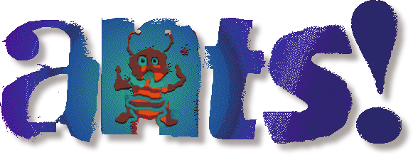

Ants (1998): matches

Every match played here.Open a match for its stats and its replay. The stats are kept for good, the recordings for 30 days.

Every match played here.Open a match for its stats and its replay. The stats are kept for good, the recordings for 30 days.